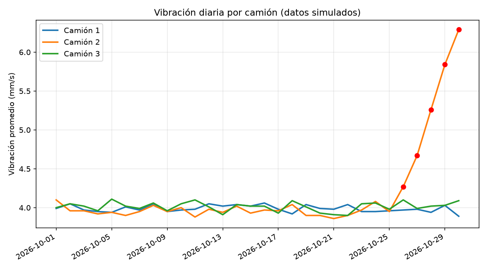

Los datos de la minería sanjuanina, claros y con fuente.
Oro.
Ordeno la información pública de Veladero, Vicuña y los proyectos que vienen, y muestro qué puede aportar la ciencia de datos en cada etapa, de la exploración a la operación.
Mina de oro en Iglesia, San Juan, de Barrick y Shandong Gold (50% cada una). Las cifras salen de los informes trimestrales de Barrick y se actualizan cuando la empresa publica uno nuevo.
No se pudieron cargar los datos del panel.Falta el archivo datos/veladero.js. Se genera con python herramientas/actualizar_web.py.
Oro producido, mina completa (100%)
Miles de onzas por trimestre
Dato de BarrickPendiente de confirmar con el PDF original
Costo total por onza (AISC)
Dólares por onza. El eje empieza en US$1.000.
AISC: todo lo que cuesta producir y sostener la mina, por onza.
Mineral procesado
Miles de toneladas por trimestre, mina completa
Ley del mineral
Gramos de oro por tonelada procesada
Menos gramos por tonelada significa menos oro con el mismo trabajo.
Cómo leerlo. En el T3 2026 la producción cayó 25% contra el T2: según Barrick, los temporales de invierno obligaron a suspender la operación varias veces en el trimestre y entró menos mineral a la pila de lixiviación. Con menos onzas, el costo por onza sube: el costo de ventas pasó de US$1.141 (T1 2025) a US$2.606 (T3 2026) y el AISC llegó a US$1.788. Barrick espera que Veladero cierre 2026 cerca o por debajo del piso de su guía. Para la baja del segundo trimestre, los informes revisados no dan la causa, y por eso esta página no la supone.
Ver la tabla de datos
* Pendiente de confirmar con el PDF original de Barrick. s/d: sin dato en las fuentes revisadas.Descargar CSV
Fuente: Barrick Mining Corporation, Mine Statistics y MD&A trimestrales (T3 2025, T1 2026, T2 2026 y T3 2026), barrick.com, sección Investors. El T4 2025 solo tiene la parte de Barrick (50%), tomada del comparativo del informe del T1 2026. Guía 2026 de Barrick para su 50%: 180.000 a 200.000 onzas. Última actualización: .
Dónde aporta la ciencia de datos en una mina
Cinco frentes donde los datos ya se usan en minería y hacia dónde van. Son ejemplos generales: no describen lo que hace hoy una mina en particular.
Mantenimiento predictivo
Detección de anomalías y series de tiempo
Hoy
Con vibración, temperatura y horas de uso de camiones y molinos, detectar un desvío antes de que se convierta en falla y planificar la parada.
A futuro
Estimar cuánta vida útil le queda a cada componente y pedir el repuesto con tiempo.
Energía y combustible
Regresión y optimización
Hoy
Comparar consumos por ruta, turno y equipo para encontrar dónde se gasta de más.
A futuro
Anticipar la demanda eléctrica de una operación y ajustar el despacho de equipos para gastar menos por tonelada.
Exploración geológica
Clasificación y análisis espacial
Hoy
Ordenar muestras, geoquímica y perforaciones en una sola base y verlas en un mapa.
A futuro
Combinar esos datos con imágenes satelitales para priorizar dónde perforar primero.
Proveedores y cadena de suministro
Tableros y pronóstico de demanda
Hoy
Tableros de costos, plazos de entrega y cumplimiento de cada proveedor.
A futuro
Que un proveedor local pueda anticipar qué insumos y servicios va a pedir cada proyecto y cuándo.
Seguridad y ambiente
Monitoreo y alertas
Hoy
Reunir mediciones de agua, aire e incidentes en un tablero con alertas claras.
A futuro
Detectar patrones antes de un incidente y mostrar el seguimiento ambiental de forma abierta.
Base: nota de Tiempo de San Juan sobre los usos de la inteligencia artificial en minería. Las técnicas y los ejemplos son propuestas propias.

Datos simulados
Ejemplo: alerta temprana en camiones
Tres camiones con vibración simulada. El camión 2 empieza a deteriorarse el día 25 y el sistema lo marca el día 26, cuando supera el promedio más tres desvíos de sus primeros diez días.
No representa a ninguna mina real. El paso a paso, con el código en Python y SQL, está en la guía de sensores.
Lo que viene en San Juan, y qué datos va a generar
Los proyectos mineros de la provincia según su etapa, los que están más cerca de construirse y los proyectos de datos que armo con esa información.
Proyectos por etapa
Producción
Veladero
Gualcamayo
Oro y plata
Preconstrucción
JosemaríaParte de Vicuña
Cobre
Factibilidad
Los Azules
Pachón
Hualilán
Cobre, molibdeno, oro, plata, plomo y zinc
Prefactibilidad
Altar
Cobre y oro
Exploración avanzada
Filo del SolParte de Vicuña
Chita
Del Carmen
Piuquenes
Coipita
Cobre, oro, plata y molibdeno
Fuente: Ministerio de Minería de San Juan, citado por Diario de Cuyo (nota sin fecha visible). Es una fuente secundaria y falta confirmarla con el Ministerio.
Los más cerca de avanzar
RIGI aprobado, Resolución 1154/2026
Vicuña: Josemaría y Filo del Sol
Sociedad conjunta de BHP y Lundin Mining. La primera etapa es Josemaría; después se suma Filo del Sol.
Compromiso inicial de inversión
US$9.737 millones
Inversión total, primeros 10 años
hasta US$18.000 millones
Primer concentrado de cobre
2030
Demanda eléctrica inicial
260 MW
Red de proveedores
245, de ellos 150 de San Juan
Qué puede aportar la ciencia de datos
Seguir el avance de obra y las compras a proveedores locales, planificar la demanda de energía y arrancar el mantenimiento predictivo desde el primer equipo.
Fuente: iProfesional, 30/7/2026 y 23/9/2026 (cita la Evaluación Económica Preliminar de febrero de 2026). Falta contrastar con la presentación de la empresa.
Factibilidad
Los Azules
Proyecto de cobre de McEwen Copper, en el RIGI desde septiembre de 2025. Obtuvo un préstamo de US$240 millones y, según la empresa, la decisión final de inversión sería a mediados de 2027.
Con datos
Un análisis económico que muestre cómo cambia el proyecto con el precio del cobre.
Fuente: Mejor Energía, 31/8/2026. Fecha de decisión a confirmar.
En producción
Veladero: fases 8 y 9
Con el RIGI aprobado el 6 de abril de 2026, Barrick y Shandong Gold invierten US$380 millones en las fases 8 y 9 de la pila de lixiviación.
Con datos
El panel de esta página: producción, ley y costos cada trimestre.
Fuente: iProfesional, abril de 2026.
Mis proyectos de datos
Cada uno con su estado. Lo que todavía no está hecho figura como pendiente.
En marcha
Panel de VeladeroProducción, mineral procesado, ley y costos por trimestre, leídos de un CSV que se actualiza con cada informe de Barrick.
Python, pandas y SQLite
Datos simulados
Mantenimiento predictivo en camionesDetección de anomalías en vibración, con el umbral de promedio más tres desvíos.
Python, SQL y matplotlib
En preparación
Vicuña en datosInversión, energía y proveedores del proyecto, con fuentes primarias de BHP y Lundin.
Fuentes primarias
Próximo
Catastro minero abiertoMapa de concesiones con los servicios geográficos del Ministerio de Minería. Pedí confirmar las condiciones de uso antes de publicarlo.
Espera respuesta del ministerio
Próximo
Empleo, proveedores y exportacionesLas cifras de las distintas notas no coinciden, así que no las publico hasta tener la fuente oficial.
Espera respuesta del ministerio
Guías para descargar
Lo que mando cuando alguien comenta la palabra clave en los reels, ahora también acá. Cada guía trae sus fuentes y la fecha de la información.
Veladero y su ampliación: ficha y RIGI
Ficha de la mina, qué aprobó el RIGI para las fases 8 y 9, qué establece el régimen y cómo viene la producción. En los reels, palabra clave VELADERO o RIGI.
Si tu empresa tiene planillas, sistemas o sensores con datos que nadie mira, podemos empezar por algo chico y concreto, y ver si sirve antes de ir más lejos.
Empresas mineras y contratistas
Para operaciones y áreas que ya generan datos.
Tableros de operaciónProducción, costos, consumos o indicadores propios en gráficos claros, con fuente y fecha en cada cifra.
Orden de datosPlanillas y exportaciones de distintos sistemas unificadas en una base que se consulta con SQL.
Pruebas de conceptoDetección de anomalías y mantenimiento predictivo sobre una muestra de datos de sensores.
Proveedores y pymes del sector
Para quienes venden bienes y servicios a la minería.
Mapa de la demanda que vieneQué proyectos avanzan, en qué etapa están y qué van a necesitar, con datos públicos y su fuente.
Tablero comercialVentas, entregas y cumplimiento por cliente, para mostrar resultados con números.
Informes a medidaSeguimiento de informes de empresas y organismos sobre un tema que te interese.
Cómo trabajamos
Una charlaMe contás qué datos tenés y qué querés resolver.
Una muestraMe compartís una parte de los datos, con la confidencialidad que necesites.
Una prueba chicaArmo un primer resultado concreto: un tablero, un informe o una alerta.
Decidimos juntosSi sirve, seguimos. Si no, te quedás con lo que se hizo.
Soy estudiante de Ciencia de Datos en la Universidad Siglo 21 y estoy armando mi experiencia con proyectos propios sobre información pública. Prefiero decirlo de entrada y mostrar el trabajo hecho en esta página.
Cuando una cifra cambia o me equivoco, queda anotado acá.
Reel 4: el aumento de 15% era contra otro trimestre. La producción del primer trimestre de 2026 subió 15% contra el cuarto trimestre de 2025, no contra el primero de 2025. El reel se reescribió con los informes de Barrick.
Proyección 2026 de Veladero: se usa la guía de Barrick. Una nota de prensa citaba 380.000 a 440.000 onzas; la guía de Barrick es 360.000 a 400.000 para la mina completa (180.000 a 200.000 para su 50%).
Tercer trimestre de 2026 cargado. Del informe de Barrick del 9 de noviembre de 2026: 54.000 onzas de la mina completa (27.000 para Barrick), 25% menos que en el T2 por los temporales de invierno.
Tercer trimestre de 2025 confirmado. Se había cargado con una herramienta automática y estaba marcado con línea punteada. Las cifras coinciden con el comparativo del informe del T3 2026 de Barrick, así que se saca la marca.
Contacto
Para consultas, propuestas de trabajo o datos que quieras compartir. Contame qué tenés y qué querés resolver.